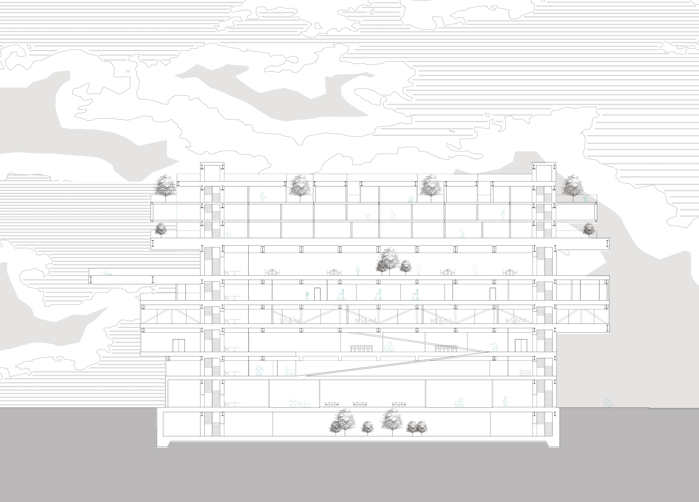

-
서양화는 특정한 시간과 장소, 일정한 거리와 각도에서 그 시야 안의 피사체를 묘사한다. 반면에 동양화는 어디에 소실점을 두고 그렸는지 잘 알아보기가 힘들다. 서양화처럼 앞에 있는 것은 크게, 뒤에 있는 것은 작게 묘사가 되어있지 않고 한 장면 한 장면이 따로 그려 붙여놓은 것처럼 보인다.
'산의 모습은 걸음에 따라 변하고'
동양화는 고정된 시점이 아닌 화가가 걷고 보고 느낀 것을 그려낸다. 대상의 각 방면을 한 그림에 묘사해낸다.
도시의 건물들은 모두 서양화를 그려내는 화가의 시선처럼 고정되어 있다. 이러한 틀을 깨고 동양화의 관점을 가져와 사용자가 다양한 각도로 외부를 바라볼 수 있게 된다면 어떨까. -

Concept Collage
-

Section